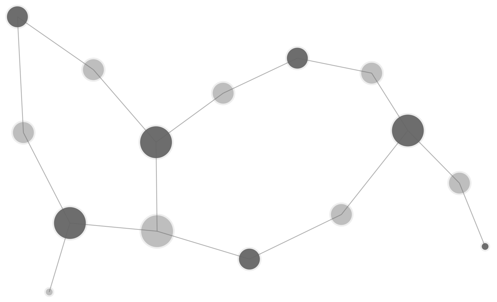

<main>

  
  
  <nav class="post-list">

    <div id="prev">
      <i class="fa fa-chevron-circle-left" onclick="scrollPrev()"></i>
    </div>

    <div id="scroll">
      <ul>

        <li id="welcome"><a href="{{ "/about.html" | prepend: site.baseurl }}"><h3>About</h3></a></li>
    
        {% for post in site.posts %}

        {% if post.title.size >= 42 %}
          {% capture full_title %}{{ post.title }}{% endcapture %}
        {% else %}
          {% capture full_title %}{{ post.title }}: {{ post.subtitle }}{% endcapture %}
        {% endif %}

        <li>
          <a href="{{ post.url | prepend: site.baseurl }}">  
            {% if post.thumbnail %} 
            
            {% endif %}
            <div class="titlebox">
              <h3>{{ full_title | truncate: 42, '...' }}</h3>
              <h4>{{ post.date | date: "%B %-d, %Y" }}</h4>
            </div>
          </a>
        </li>
        {% endfor %}
                
      </ul>
    </div>

    <div id="next">
      <i class="fa fa-chevron-circle-right" onclick="scrollNext()"></i>
    </div>

  </nav>

</main>